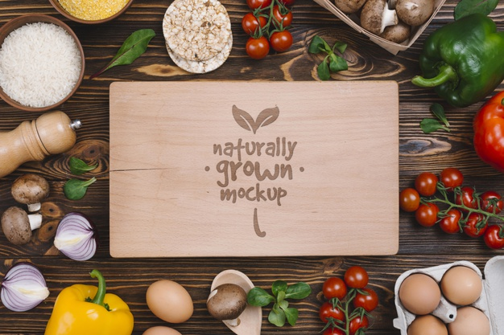

Quem somos
A partir da necessidade de inovar e integrar-se em um mundo cada vez mais digital nasceu a 4Food, um projeto audacioso de alimentação saudável do Grupo Future, que acredita que é possível dar certo, fazendo a coisa certa, do jeito certo!
Com o desejo de mudar o mundo e aproveitar o melhor da vida, vivemos e trabalhamos intensamente para facilitar a vida dos nossos clientes, dos nossos parceiros e das pessoas ao nosso redor. Queremos abraçar o mundo? Sim, somos movidos por grandes desafios!
Produtos gostosos que dão vontade de comer de novo. Produtos nutritivos para dar aquela força extra nas suas atividades. Buscamos incansavelmente fornecedores para trazer os mais frescos ingredientes para nossas receitas que são cuidadosamente pensadas para encontrar aquele ponto ótimo no qual sabor e saúde se encontram. Nossos produtos também foram pensados para satisfazer os mais diversos paladares e as mais diversas exigências. Conheça nosso cardápio!
Nosso compromisso
Buscamos os melhores ingredientes para oferecer a mais alta qualidade para você. Nosso time está trabalhando noite e dia para trazer cada vez mais alimentos orgânicos direto do campo, pois sabemos que eles são mais saudáveis e saborosos. Nossa busca não para por aí! Nós também buscamos parcerias na agricultura familiar para garantir que mais gente possa crescer com a gente.
A 4Food surgiu com o objetivo de estimular as pessoas a buscarem mais da vida através de uma alimentação melhor.